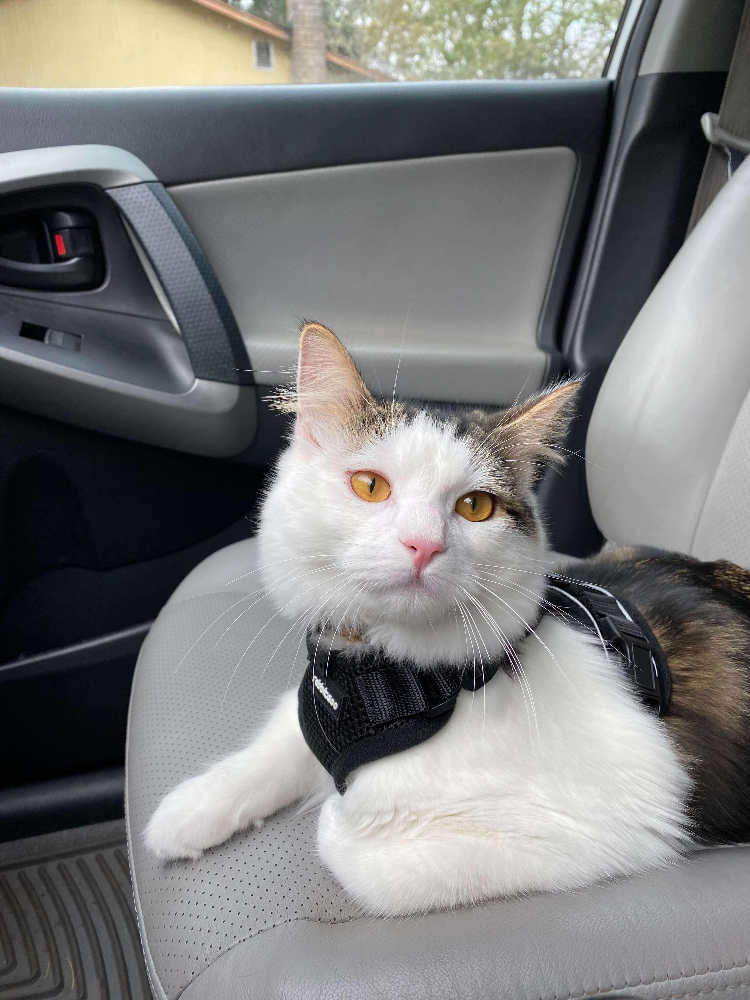
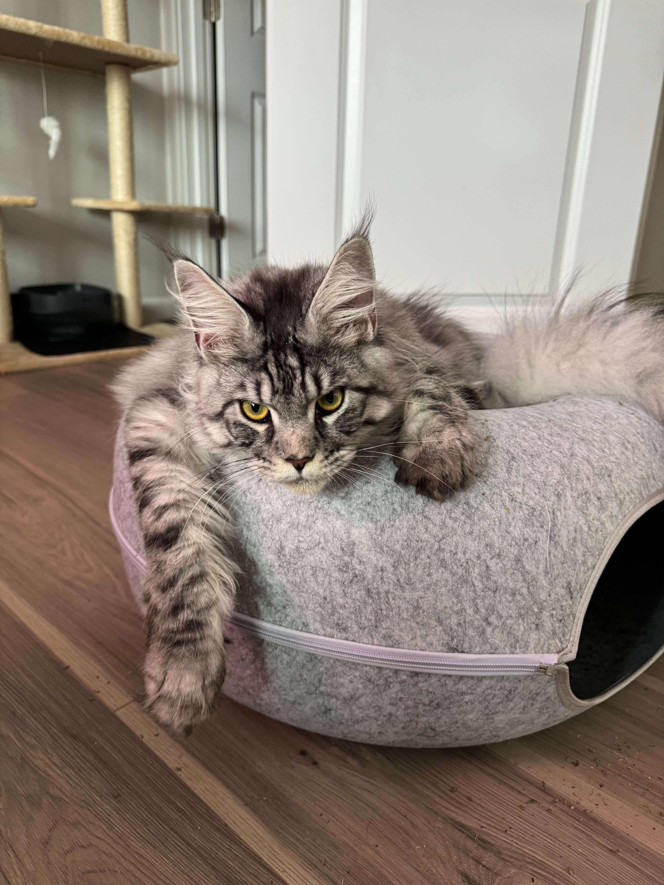
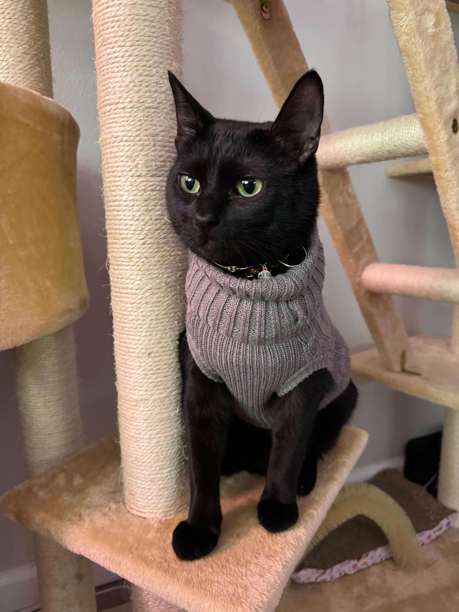

Software and Platform Engineer, with years of experience in DevOps, Cloud Infrastructure, and Platform Engineering. Underpinned by various certificates including AWS Solutions Architect. I thrive on designing and implementing scalable, high-performance solutions using technologies like Go, Bazel, GCP/AWS, and Kubernetes.
I have had the privilege of making a real business impact at great organizations. At Apex, I've architected CI/CD pipelines, leveraging unique characteristics of the Bazel build system resulting in a 65%+ P50 improvement, and 80% P90 improvement. Similarly, designed microservices, and systems for orchestrating deployment, creation of manifests and configs for a GitOps pattern. The systems also scaled effectively under load in a 15+ million line codebase handling 500+ builds of 600+ applications, and 1000+ deployments daily in a monorepo.
Moreover, as a Systems Engineer at Oregon State's Open Source Lab, I designed, and deployed critical infrastructure for more than 100 clients, including the Linux Foundation and Apache Software. Highlight being implementing end-to-end the multi-zonal automatic failover of distributed PostgreSQL databases impacting over 150 organizations.
When I'm not at my keyboard, I'm dedicated to exploring emerging technologies, managing my home server lab, following Formula 1 racing, and hiking throughout the Pacific Northwest.



Leveraging Go, Bazel, and infrastructure as code tools on the Developer experience team.
Head of engineering leveraging AI to create smarter cannabis compliance systems.
Previously working for Open Source Labs has taught immeasurable amounts about working with infrastructure. The day to day involved managing and deploying virtualized environments for clients through the infrastructure-as-code tool Chef. In addition, to deploying higher profile projects such as a high-availability PostgreSQL cluster with automatic failover capabilites.
Part-time role while attending University full-time. Whilst there I focused on back-end and system development. Unfortunately, this was short-lived as the position was eliminated during a reorganization due to macro economic conditions.
During my internship I worked as a part of a team developing internal tools supporting business critical operations such as processing loans/liens. Specifically, I developed APIs for these operations.
I was an Instructor teaching programming fundamentals throughout my senior year of high school. I had the opportunity to teach at a variety of schools around and in the greater Portland area. The majority of my time was spent both developing curriculum and teaching to youth concepts ranging from basic conditionals to programming Arduinos in C.
Majoring in Computer Science with applied option in web and mobile application development.
Three years of Electronics & Programming and Coding.